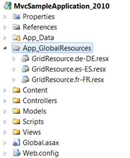
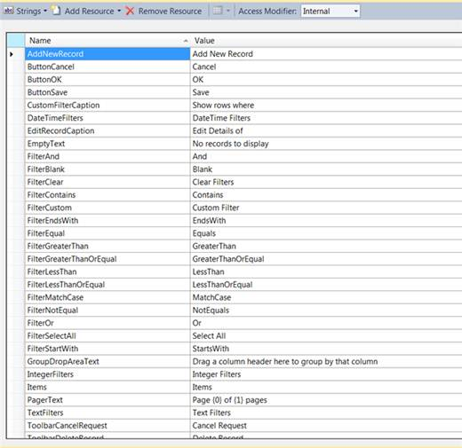
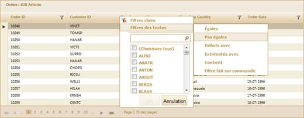

To enable the localization feature using GridBuilder:
1. Create a model in the application (Refer to Getting Started>Adding a Model to the Application).
2. Create a strongly typed view (Refer to How to>Strongly Typed View).
3. Create a folder named App_GlobalResources in the application and create your own localization resource (.resx) file in this folder.

Figure 264: App_GlobalResource Folder
In order to create a new localization resource file, download the default localization file from the following location, rename it, and then use Visual Studio to edit the values.
The default English localization file is shown in the following screenshot:

Figure 265: Resource File For English Localization
 Note: The name of the localization file should be
in the format GridResource.[culture].resx. For example:
"GridLocalization.fr-FR.resx"
Note: The name of the localization file should be
in the format GridResource.[culture].resx. For example:
"GridLocalization.fr-FR.resx"
1. Create the Grid control in the view and configure its properties.
2. There are two ways to specify the culture information, namely:
· Setting the CurrentUICulture property of the CurrentThread inside your Action method:
|
[C#]
public ActionResult Index() var data = new NorthwindDataContext().Orders; }
|
· Specifying the culture using the Localize() method:
|
View [ASPX]
<%=Html.Syncfusion().Grid<Order>("Grid1")
|
|
View [cshtml]
@{ Html.Syncfusion().Grid<Order>("Grid1") }
|
3. Set its data source and render the View.
|
[C#]
/// <summary>
|
4. Run the application. The grid will appear as shown below:

Figure 266: Grid With French Localization
Customization
If you want to customize the localization resource file folder path, then use the LocalizationPath() method.
|
View [ASPX]
<%=Html.Syncfusion().Grid<Order>("Grid1") .Localize("fr-FR")// Specify the culture code. .LocalizationPath("~/App_LocalResources") // Specify the folder. %>
|
|
View [cshtml]
@{ Html.Syncfusion().Grid<Order>("Grid1") .Localize("fr-FR")// Specify the culture code. .LocalizationPath("~/App_LocalResources") // Specify the folder. .Render(); }
|